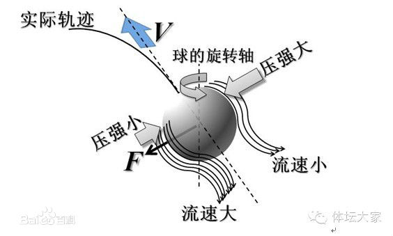

工程流体力学（甲）Ⅰ¶
课程信息
- 主讲教师：俞自涛、范利武
- 教材：孔珑主编《工程流体力学（第四版）》，中国电力出版社
- 课程范围：流体性质、流体静力学、理想流体动力学、黏性流动、可压缩一维流动、量纲分析与相似原理
- 考核方式：期末考试 60%；平时成绩 40%（作业、阅读和课堂测验）。此项按 2026 年秋季教学指南记录。
工程流体力学研究流体的静止、运动及其与固体之间的作用。管道阻力、泵与风机的功耗、喷管流量、机翼和球体受到的力，都可以沿着同一条思路分析：先选取流体模型，再写质量、动量和能量守恒关系，最后用材料性质与边界条件确定未知量。
本页按《工程流体力学（甲）Ⅰ》的六章教学提纲编排。回忆卷中出现的势流、边界层和激波问题放在相应章节或附录；文末把记忆不完整的题干标为“回忆题”，不补造缺失数据。
符号速查¶
| 符号 | 含义 | 常用单位或关系 |
|---|---|---|
| \(\rho\) | 密度 | \(\mathrm{kg/m^3}\) |
| \(p\) | 绝对压强 | \(\mathrm{Pa}\) |
| \(\mu\) | 动力黏度 | \(\mathrm{Pa\cdot s}\) |
| \(\nu\) | 运动黏度 | \(\nu=\mu/\rho\)，\(\mathrm{m^2/s}\) |
| \(\sigma\) | 表面张力系数 | \(\mathrm{N/m}\) |
| \(\boldsymbol V\)、\(u,v,w\) | 速度矢量及其直角坐标分量 | \(\mathrm{m/s}\) |
| \(Q\)、\(\dot m\) | 体积流量、质量流量 | \(Q=AV\)，\(\dot m=\rho Q\) |
| \(A,D,L\) | 截面积、管径、长度 | \(\mathrm{m^2}\)、\(\mathrm m\) |
| \(g\) | 重力加速度 | 约 \(9.81\ \mathrm{m/s^2}\) |
| \(\gamma_g\) | 气体比热比 | \(\gamma_g=c_p/c_v\) |
| \(\mathrm{Re}\) | 雷诺数 | \(\rho VL/\mu=VL/\nu\) |
| \(\mathrm{Ma}\) | 马赫数 | \(V/a\) |
| \(\boldsymbol\Omega\)、\(\boldsymbol\omega\) | 涡量、流体微团旋转角速度 | \(\boldsymbol\Omega=\nabla\times\boldsymbol V=2\boldsymbol\omega\) |
| \(\Gamma\) | 速度环量 | \(\oint_C\boldsymbol V\cdot\mathrm d\boldsymbol l\) |
| \(\delta,\delta^*,\theta\) | 边界层、位移、动量厚度 | \(\mathrm m\) |
| \(f_D,K\) | 达西沿程阻力系数、局部阻力系数 | 无量纲 |
同一个希腊字母可能有不同含义
有些教材用 \(\gamma\) 表示流体重度 \(\rho g\)，也常用 \(\gamma_g\) 表示气体比热比。本文用 \(\rho g\) 表示重度，用 \(\gamma_g\) 表示比热比；遇到原题时以题目定义为准。
章节概览¶
| 章节 | 标题 | 主要问题 |
|---|---|---|
| 第一章 | 流体的性质 | 流体如何区别于固体，黏性和表面张力怎样进入模型 |
| 第二章 | 流体静力学 | 静止流体的压强如何分布，流体对平面和曲面施加多大作用力 |
| 第三章 | 理想流体动力学 | 连续性、欧拉方程和伯努利方程如何描述流动 |
| 第四章 | 黏性流体动力学 | 黏性流动、管道损失和边界层如何计算 |
| 第五章 | 可压缩流体一维定常流动 | 声速、马赫数、临界流动和喷管如何分析 |
| 第六章 | 量纲分析与相似原理 | 如何用少量无量纲参数组织实验和模型设计 |
建议的做题顺序
先明确流体是否可压缩、是否可忽略黏性、流动是否定常，再选择控制体或流体微团。写方程前先画出方向、截面和压强基准；算完后检查单位、符号和极限情形。
第一章 · 流体的性质¶
章节概览
本章建立后续计算所用的流体模型。流体的核心特征是不能在静止平衡时承受剪切应力；运动时的黏性则把速度梯度和内摩擦联系起来。
流体与连续介质模型¶
流体包括液体和气体。与固体相比，流体没有固定形状；在切向力作用下会持续变形，直至应力消失或与其他作用达到平衡。固体在小变形范围内主要表现为“应力对应变”，牛顿流体则表现为“切应力对应变率”。

工程流体力学通常采用连续介质假设：把流体看成在空间中连续分布的介质，密度、压强、温度和速度等量都视为连续场。只要研究尺度远大于分子平均自由程，这个模型就能有效描述大多数常见工程流动。
液体通常较难压缩，在许多低速工程问题中可取 \(\rho=\text{常数}\)；气体容易压缩，密度可能随压强和温度明显变化。是否可视为不可压缩，最终应由工况决定，而不能仅凭“液体”或“气体”的名称判断。
密度、重度与压缩性¶
密度定义为单位体积内的质量：
重度为单位体积的重量，记作 \(\rho g\)。相对密度是流体密度与规定参考物质密度之比，无量纲。
描述压缩性的常用量是体积弹性模量：
\(K\) 越大，流体越难压缩；\(\beta\) 越小，压缩性越弱。水在一般低压流动中常可近似按不可压缩流体处理，气体则需结合流速、压差和温度变化判断。
黏性与牛顿内摩擦定律¶
黏性是流体抵抗相邻流层相对滑动的性质。黏性在运动中表现为内摩擦：速度不同的流层相互作用，较快流层受到阻滞，较慢流层受到拖曳。
对两块平行板之间的简单剪切流动，若速度主要沿 \(x\) 方向变化、且沿法向 \(y\) 的速度分布为 \(u(y)\)，牛顿内摩擦定律为
其中 \(\tau\) 为切应力，\(\mu\) 为动力黏度。动力黏度反映流体内摩擦的强弱，单位为 \(\mathrm{Pa\cdot s}\)。运动黏度定义为
单位为 \(\mathrm{m^2/s}\)。动力黏度用于应力关系；运动黏度常出现在雷诺数和扩散方程中。

牛顿流体的切应力与剪切速率成线性关系。水和空气在常见工程条件下可近似看作牛顿流体。剪切稀化、剪切增稠或具有屈服应力的流体属于非牛顿流体，不能直接套用常数 \(\mu\) 的牛顿内摩擦定律。
温度对黏度的影响
常压附近，液体温度升高时黏度通常下降；气体温度升高时黏度通常上升。低压范围内压强影响常较弱，高压时则可能不可忽略。
黏度可用毛细管流量法、落球法或旋转黏度计测量。落球法需满足球体周围流动接近斯托克斯区，并对容器壁和端部效应作修正；毛细管法则根据已知管径、长度、压差和流量反算黏度。
表面张力与毛细现象¶
液体表面分子受力不对称，使液面具有收缩趋势。表面张力系数 \(\sigma\) 表示单位长度上的表面张力，满足
若是肥皂膜，薄膜有两个自由表面，总拉力为 \(F=2\sigma l\)。对半径为 \(R\) 的液滴，液内外压强差为 \(2\sigma/R\)；肥皂泡有内外两个界面，压强差为 \(4\sigma/R\)。
接触角 \(\theta\) 表征液体、气体和固体三相交界处的界面状态。圆形细管内的毛细高度近似为
其中 \(r\) 是管内半径。\(\theta<90^\circ\) 时液面上升，\(\theta>90^\circ\) 时液面下降。

雷诺数与流动状态¶
雷诺数衡量惯性作用相对黏性作用的强弱：
其中 \(V\) 是代表速度，\(L\) 是代表长度。雷诺数小，黏性影响相对突出；雷诺数大，惯性影响相对突出。管流常用管径作特征长度；平板边界层常用距前缘的距离 \(x\)。
雷诺数必须和特征尺度一起写
\(\mathrm{Re}_D=VD/\nu\) 与 \(\mathrm{Re}_x=Vx/\nu\) 对应不同问题。计算时注明所用的速度、长度和黏度，不能只写一个没有下标的雷诺数。
第一章例题 · 平板剪切的应力与黏度¶
两平板间距为 \(h\)，上板以速度 \(U\) 运动，下板静止，压强沿流向均匀变化。若流动可近似为纯库埃特流，则
若已测得板上的剪切力 \(F\)，板面积为 \(A\)，则 \(\mu=Fh/(AU)\)。若存在压强梯度，速度分布还会叠加抛物线项，见第四章泊肃叶流动。
第二章 · 流体静力学¶
章节概览
静止流体没有剪切应力，任一点的应力只有各向相同的压强。重力场中的压强随深度线性增加；在加速容器内，则应使用相对容器的有效体积力。
静压强及其特征¶
流体静止时，任一点的压强与受压面的方向无关。压强总沿受压面法线作用。静止液体满足帕斯卡原理：外加压强的变化会传递到液体内部各处。
重力场中取 \(z\) 轴竖直向上，静力平衡方程为
若液体密度近似不变，则任意点压强为
\(h\) 是测点低于自由液面的深度，\(p_0\) 是液面压强。开口容器中 \(p_0\) 通常为大气压。绝对压强、表压和真空度的关系是
测压管与压强计¶
静水中同一连通液体的同一水平面上压强相等。使用 U 形管或多液柱压强计时，可从已知压强处出发沿管逐段走到目标点：
- 向下经过液柱，压强增加 \(\rho g\Delta h\)；
- 向上经过液柱，压强减少 \(\rho g\Delta h\)；
- 穿过不同液体界面时，压强连续，但密度要换成该段液体的密度。
压强计的符号检查
先画出各段液柱高度，再给每一段标清“向上”或“向下”。若最终测点比已知点低且处于同一静止液体中，压强差应为正；出现相反符号通常是高度方向写错。
平面上的静水总压力¶
平面面积为 \(A\)，形心位于自由液面下深度 \(h_c\)，且液面压强为 \(p_0\)。对表压积分得合力大小
总压力作用点称为压力中心。对与自由液面相交、倾角为 \(\alpha\) 的平面，沿平面从液面量距离 \(s\)，形心位置为 \(s_c\)，形心轴惯性矩为 \(I_G\)，则
压力中心通常低于形心，因为压强随深度增加。若液面上方还存在均匀表压，需要把均匀压强产生的合力一并计入。
曲面上的静水总压力¶
曲面受力可拆成水平和竖直分量：
- 水平分量等于该曲面在竖直平面上的投影所受静水总压力；
- 竖直分量等于曲面上方或下方假想液柱的重量，具体方向由受压侧和曲面形状决定；
- 合力为两分量的矢量和。
浮力与加速容器¶
物体浸入静止液体后，受到向上的浮力
其中 \(V_{\mathrm{disp}}\) 是排开液体的体积。浮力作用线通过排开液体的体积中心。
若容器相对惯性系以加速度 \(\boldsymbol a_0\) 平移，在容器坐标系中加入惯性力后，静止液体满足
自由液面垂直于有效体积力方向。竖直容器向上加速时，液体相对容器的有效重力变为 \(g+a_0\)，底部压强梯度变大；水平加速时，自由液面倾斜。

第二章例题 · U 形管压强计的列式¶
若一侧连接压强为 \(p_A\) 的容器，另一侧开口于大气，测压液体密度为 \(\rho_m\)，被测液体密度为 \(\rho\)，按液面高度从 A 点向开口端逐段走。每经过一段液体，就按“向下加、向上减”写一项 \(\rho_i g\Delta h_i\)，最后令到达开口端的压强等于 \(p_{\mathrm{atm}}\)。多液柱题不宜直接套单一高度公式。
第三章 · 理想流体动力学¶
章节概览
理想流体是忽略黏性的模型。质量守恒给出连续性方程，牛顿第二定律给出欧拉方程，机械能沿流线守恒给出伯努利方程。三者描述的物理量不同，不能互相替代。
描述流体运动¶
流体质点的位置和速度随时间变化。速度场可写成 \(\boldsymbol V(x,y,z,t)\)。质点沿时间走过的轨迹称为迹线；某一时刻处处与速度相切的曲线称为流线；连续经过固定空间点的流体质点构成脉线。定常流动中三者重合。
随流体质点观察的物理量变化率称为物质导数：
例如质点加速度为
定常流动中局部加速度为零，但流体仍可因空间速度变化而有对流加速度。
质量守恒与连续性方程¶
控制体内质量变化率加上流出质量净通量为零：
微分形式为
不可压缩流体满足
一维定常管流常用
不可压缩时退化为 \(A_1V_1=A_2V_2=Q\)。
理想流体运动方程与动量守恒¶
忽略黏性应力后，作用于流体微团的表面力只剩压强。欧拉方程为
其中 \(\boldsymbol f\) 是单位质量体积力，重力场中为 \(\boldsymbol g\)。对控制体，动量定理写成
定常单入口、单出口时，右侧简化为 \(\dot m(\boldsymbol V_2-\boldsymbol V_1)\)。计算弯管、喷嘴和射流受力时，应把压强力、重力及支座反力按同一坐标方向列出。
伯努利方程¶
对不可压缩、定常、无黏流动，若体积力有势，在同一条流线上积分欧拉方程可得
或按单位重量写成水头形式
三项分别是压强水头、速度水头和位置水头。
使用伯努利方程前的检查
- 流动可视为定常。
- 流体密度近似不变，黏性损失可以忽略或另行补入。
- 选取的两点在同一条流线上；若流动无旋，常数才可扩展到不同流线。
- 两点间没有未计入的泵功、涡轮功或显著热能交换。
实际黏性管流的伯努利方程需加入水头损失，并按需要加入泵扬程和涡轮取能，见第四章。停滞点处速度降为零，停滞压强为 \(p_0=p+\rho V^2/2\)；该关系是皮托管测量速度的基础。
小孔出流、文丘里管与皮托管¶
大容器液面面积远大于小孔面积、两处均近似为大气压、液面速度可忽略时，由伯努利方程得到托里拆利公式
文丘里管在缩口处截面积减小、速度升高、静压降低。联立连续性方程和两断面间伯努利方程可由压差求流量。皮托管利用迎流停滞点与静压孔之间的压差测得动压：
实际仪器需用流量系数、压强孔布置和密度修正。
第四章 · 黏性流体动力学¶
章节概览
实际流体的黏性使壁面产生切应力和能量损失。本章的核心流程是先判断流动状态，再求速度分布或阻力系数，最后把沿程损失和局部损失并入能量方程。
广义牛顿内摩擦定律¶
在牛顿流体中，黏性应力与变形率成线性关系。常用的三个构成假设是：流体宏观上各向同性；黏性应力对变形率为线性响应；静止时切应力为零，法向应力退化为静压强。不可压缩不是这三个假设之一。
对不可压缩、黏度为常数的牛顿流体，偏应力张量为
平面剪切流中 \(\tau_{xy}=\mu(\partial u/\partial y+\partial v/\partial x)\)；若 \(v=0\) 且 \(u=u(y)\)，就得到第一章的 \(\tau_{xy}=\mu\,\mathrm du/\mathrm dy\)。
对可压缩牛顿流体还需描述体积变形引起的各向同性黏性应力。常见的斯托克斯假设 \(\lambda+2\mu/3=0\) 是对体黏度系数的闭合近似，不能与“流体不可压缩”混为一谈。
纳维－斯托克斯方程¶
对不可压缩、密度和黏度为常数的牛顿流体，纳维－斯托克斯方程的矢量形式为
左边是单位质量流体的局部和对流加速度；右边分别是体积力、压强力和黏性扩散项。求具体流动时还必须给出初始条件、固壁无滑移条件、入口出口条件或远场条件。
固壁边界条件
黏性流体在固定固壁上通常满足无滑移、无穿透条件：壁面法向和切向速度都等于壁面速度。理想流体模型通常只强制无穿透，不要求切向速度与壁面相同。
库埃特流与泊肃叶流¶
两块平行板间距为 \(h\)，下板静止、上板以 \(U\) 运动，且没有流向压强梯度时，库埃特流速度分布为
\(Q'\) 是单位宽度的体积流量。
两板固定、压强沿 \(x\) 方向下降时，板间平面泊肃叶流为
最大速度在中面，平均速度为最大速度的 \(2/3\)：
圆管内充分发展层流的速度剖面为抛物线：
相应流量和平均速度为
管流状态与沿程阻力¶
圆管雷诺数为 \(\mathrm{Re}_D=\bar uD/\nu\)。通常 \(\mathrm{Re}_D\lesssim2300\) 为层流，约 \(2300\) 至 \(4000\) 为过渡区，较大时为湍流；临界值会受入口扰动、管道粗糙度等影响。
达西－魏斯巴赫公式写作
层流时 \(f_D=64/\mathrm{Re}_D\)。湍流时 \(f_D\) 取决于雷诺数和相对粗糙度 \(\epsilon/D\)，可用莫迪图或科尔布鲁克公式求取：
水力光滑管、过渡粗糙管和完全粗糙管对应不同的黏性与粗糙度影响区间，不能仅凭“粗糙”或“光滑”口头判断系数。
局部阻力按
计算，\(K\) 对应的参考速度必须与阻力系数定义一致。突扩、突缩、弯头、阀门和入口出口都可能产生局部损失。
管路能量方程与组合管路¶
实际流动沿程的能量方程可写为
\(H_p\) 为泵对流体增加的水头，\(H_t\) 为涡轮从流体取走的水头，\(h_L\) 是沿程和局部损失之和，\(\alpha\) 是动能修正系数。
串联管路各段流量相同，总损失为各段损失之和；并联支路的总水头损失相同，总流量等于各支路流量之和。复杂管网可按节点连续方程与回路能量方程联立求解。
边界层、厚度与分离¶
高雷诺数外部流动中，黏性影响常集中在固壁附近的薄层内，称为边界层。边界层内速度由壁面速度逐渐趋向外缘速度 \(U\)；常把速度达到 \(0.99U\) 的位置定义为厚度 \(\delta\)。
位移厚度反映边界层造成的质量流量亏损：
它表示外部无黏流若整体向外位移多少，才能补偿边界层带来的质量流量减少。动量厚度反映动量亏损：
当 \(0\leq u/U\leq1\) 时，通常满足
因此位移厚度小于边界层厚度、大于动量厚度。
零压强梯度平板层流边界层的布拉修斯近似结果为
平板从前缘到 \(L\) 的平均摩擦系数为 \(\bar c_f\approx1.328/\sqrt{\mathrm{Re}_L}\)。湍流边界层在相同雷诺数、相同平板和常见光滑平板比较条件下通常有更大的摩擦阻力；它近壁动量交换强，也更能抵抗逆压强梯度。层流和湍流边界层都可能发生分离，判据是壁面切应力降到零并出现反向流动，不能说“层流不会分离”。
冯卡门动量积分方程的一般形式为
若外流速度 \(U\) 为常数，方程简化为 \(\tau_w=\rho U^2\,\mathrm d\theta/\mathrm dx\)。给出速度剖面 \(u/U=f(y/\delta)\) 时，依次计算 \(\theta/\delta\)、壁面速度梯度，再代入动量积分方程求 \(\delta(x)\)；摩擦阻力要对壁面切应力沿长度积分。
第四章例题 · 用速度剖面求边界层厚度¶
回忆卷材料给出
且为零压强梯度平板流动。先积分得
壁面切应力为
代入动量积分方程并令 \(\nu=\mu/\rho\)：
若水的 \(\nu=10^{-6}\ \mathrm{m^2/s}\)，\(U=1\ \mathrm{m/s}\)，\(L=1\ \mathrm m\)，则 \(\mathrm{Re}_L=10^6\)，\(\delta(L)\approx4.64\ \mathrm{mm}\)。取 \(\rho=1000\ \mathrm{kg/m^3}\)、\(\mu=\rho\nu=0.001\ \mathrm{Pa\cdot s}\)，得 \(\tau_w(L)\approx0.323\ \mathrm{Pa}\)。宽 \(0.5\ \mathrm m\) 的平板两面总摩擦阻力约为 \(0.646\ \mathrm N\)。
第五章 · 可压缩流体一维定常流动¶
章节概览
本章主要研究密度随压强、温度变化的高速气流。先由声速确定马赫数，再结合连续方程、能量方程和等熵关系分析喷管截面变化和流量是否堵塞。
声速、马赫数与等熵关系¶
小扰动在气体中传播的速度称为声速。对热完全气体的等熵小扰动，
马赫数为
\(\mathrm{Ma}<1\) 为亚声速，\(\mathrm{Ma}=1\) 为声速，\(\mathrm{Ma}>1\) 为超声速。若气流变化足够缓慢且过程可逆、绝热，满足
定常一维能量方程与滞止参数¶
稳定、绝热、无轴功的一维流动满足
对定比热理想气体，
\(T_0\) 是气流等熵减速到零速时的滞止温度。等熵流动中滞止温度和滞止压强不变。滞止压强关系为
等熵喷管与临界流动¶
一维定常质量守恒为
气流速度、密度和截面积的变化满足
亚声速流动要加速，需要收缩截面；超声速流动要加速，需要扩张截面。收缩－扩张喷管可先在收缩段加速到声速，再在扩张段继续加速到超声速。
当喉部达到 \(\mathrm{Ma}=1\)，质量流率达到给定滞止状态下的最大值，称为临界或堵塞流动。临界状态参数为
继续降低背压不会再增加喉部质量流率；喷管下游的压力调整可能通过膨胀波、压缩波或激波完成。
第五章例题 · 判断收缩段是否能使气流加速¶
先算入口马赫数 \(\mathrm{Ma}_1=V_1/\sqrt{\gamma_gRT_1}\)。若入口为亚声速，缩小面积使速度增大、静压和静温下降；若已是超声速，单纯收缩反而使速度降低。若题目要求出口超声速，应确认装置是否包含达到声速的喉部和其后的扩张段。
第六章 · 量纲分析与相似原理¶
章节概览
实验研究往往同时涉及几何尺寸、流速、密度、黏度和重力等变量。量纲分析把变量组合成无量纲数，帮助减少实验次数，并判断模型与原型能否相似。
量纲一致性与 \(\Pi\) 定理¶
量纲一致性要求物理方程两边的量纲相同。对 \(n\) 个物理量，如果它们由 \(k\) 个独立基本量纲组成，依巴金汉 \(\Pi\) 定理指出问题可化为 \(n-k\) 个独立无量纲组合之间的关系。
常见基本量纲为质量 \(M\)、长度 \(L\)、时间 \(T\) 和温度 \(\Theta\)。选重复变量时，应满足：彼此量纲独立、涵盖问题所含基本量纲，且不把待求因变量选作重复变量。
量纲分析步骤¶
- 写出待求量及所有可能相关变量。
- 列出各变量的量纲。
- 选出满足独立性条件的重复变量。
- 对每个非重复变量构造无量纲乘积，解出指数。
- 检查各 \(\Pi\) 群的量纲确为 1，再由实验确定群间函数关系。
相似条件与常见无量纲数¶
模型与原型通常依次检查几何相似、运动相似和动力相似。对主导物理机制，需使对应无量纲数相等或足够接近：
| 无量纲数 | 定义 | 主要比较的作用 |
|---|---|---|
| 雷诺数 \(\mathrm{Re}\) | \(\rho VL/\mu\) | 惯性力与黏性力 |
| 弗劳德数 \(\mathrm{Fr}\) | \(V/\sqrt{gL}\) | 惯性力与重力 |
| 欧拉数 \(\mathrm{Eu}\) | \(\Delta p/(\rho V^2)\) | 压强力与惯性力 |
| 马赫数 \(\mathrm{Ma}\) | \(V/a\) | 流速与声速，衡量压缩性 |
| 韦伯数 \(\mathrm{We}\) | \(\rho V^2L/\sigma\) | 惯性力与表面张力 |
管流阻力实验通常优先匹配雷诺数；自由液面波浪常需匹配弗劳德数；高速气流需关注马赫数；小尺度液滴和毛细流动需关注韦伯数。若多个效应都不可忽略，模型尺度设计可能无法同时满足所有相似条件，应说明主要误差来自哪一项。
第六章例题 · 圆柱阻力的无量纲表达¶
设圆柱受到的阻力 \(F_D\) 与流体密度 \(\rho\)、动力黏度 \(\mu\)、来流速度 \(V\) 和圆柱直径 \(D\) 有关。取 \(\rho,V,D\) 为重复变量，可得
左侧可整理为阻力系数，右侧是雷诺数的函数。于是不同尺寸模型在相同雷诺数下，阻力系数可直接比较。
附录一 · 正激波计算¶
激波是有限厚度内发生的强压缩波。跨越激波时黏性和热传导不可忽略，熵增加，过程不可逆，因此不能把前后状态直接按等熵关系联系。对绝热正激波，质量、动量和能量守恒分别为
对热完全气体，常用结果为
对压缩正激波，\(\mathrm{Ma}_1>1\)，\(\mathrm{Ma}_2<1\)；静压、密度、温度升高，速度降低，滞止温度保持不变而滞止压强降低。
正激波例题 · \(\mathrm{Ma}_1=2.5\)¶
空气取 \(\gamma_g=1.4\)，上游静温 \(T_1=300\ \mathrm K\)，上游静压 \(p_1=100\ \mathrm{kPa}\)。代入关系式得
因此 \(p_2=712.5\ \mathrm{kPa}\)。若题目只问压强比、下游温度和下游马赫数，\(p_1\) 不影响后两者。
正激波例题 · 上游空气静止、激波速度为 \(500\ \mathrm{m/s}\)¶
若 \(500\ \mathrm{m/s}\) 表示激波相对实验室的速度，而上游空气在实验室中静止，则激波固定坐标系中的上游速度大小为 \(V_1=500\ \mathrm{m/s}\)。取 \(T_1=25^\circ\mathrm C=298.15\ \mathrm K\)、\(p_1=1.01\times10^5\ \mathrm{Pa}\)、\(R=287\ \mathrm{J/(kg\cdot K)}\)、\(\gamma_g=1.4\)：
计算得
激波固定坐标系中的下游速度大小为
若题目问实验室坐标系中的下游空气速度，且激波向静止空气方向前进，则下游空气速度约为 \(500-283=217\ \mathrm{m/s}\)。答题时必须先辨清参考系。
附录二 · 回忆卷考点与解题¶
回忆题的使用范围
以下内容依据用户提供的多学期回忆整理。题目版本、课程归属或原始数值记忆不完整处会明确标注，只给通用判定方法，不把推测补成原题。
选择题与判断题速查¶
| 题目要点 | 结论 | 判断依据 |
|---|---|---|
| 涡线切线方向 | 涡量矢量方向 | 涡线定义为处处与 \(\boldsymbol\Omega\) 相切 |
| 无旋流动 | \(\nabla\times\boldsymbol V=0\) | 无旋不代表流体静止 |
| 正压流体 | \(\rho=\rho(p)\) | 压强梯度与密度梯度平行 |
| 小扰动且忽略黏性耗散 | 等熵近似 | 绝热且可逆的小扰动，不是等焓过程 |
| 广义牛顿内摩擦定律的假设 | “流体不可压缩”不是三项假设之一 | 线性、各向同性、静止时退化为静压应力 |
| 速度势与流函数 | 柯西－黎曼条件 | 两者同时存在时满足导数关系 |
| 位移厚度的物理意义 | 质量流量亏损对应的外流位移 | 动量亏损对应动量厚度 |
| 非牛顿流体 | 不满足常数黏度的线性应力－变形率关系 | 不能直接套牛顿内摩擦定律 |
| 正激波前后马赫数 | \(\mathrm{Ma}_1>1,\ \mathrm{Ma}_2<1\) | 正激波将超声速流减速到亚声速 |
| 斯托克斯定理 | 速度环量等于涡量通量 | \(\oint_C\boldsymbol V\cdot\mathrm d\boldsymbol l=\int_S(\nabla\times\boldsymbol V)\cdot\boldsymbol n\,\mathrm dA\) |
| 涡管截面减小 | 涡量和旋转角速度增大 | 涡管强度近似为 \(\Omega A\) 并守恒 |
| 位移厚度、动量厚度、边界层厚度 | \(\theta<\delta^*<\delta\) | 适用于速度从零单调趋近外流速度的常见边界层 |
| 层流边界层不会分离 | 错 | 层流也能在逆压强梯度下分离；湍流只是通常更抗分离 |
| 同一平板、同一雷诺数下层流和湍流摩擦 | 常见全湍流比较中湍流摩擦较大 | 湍流近壁动量交换强；须确认处于湍流关联式适用区间 |
| 平面不可压缩势流的 \(\phi,\psi\) | 两者都满足拉普拉斯方程 | 需要同时满足不可压缩和无旋条件 |
| 有环量圆柱绕流的升力 | $L'=\rho U_\infty | \Gamma |
“声速小扰动为等熵”的前提
声波可近似看作小振幅、快速、绝热且可逆的扰动，所以使用等熵声速关系。若存在强耗散、热交换或激波，不能把过程当成等熵。
证明题 · 连续性与有势性¶
若给出二维速度分量 \(u(x,y)\)、\(v(x,y)\)，可按下列顺序作答：
- 检查不可压缩连续性：\(\partial u/\partial x+\partial v/\partial y=0\)。
- 检查无旋性：\(\omega_z=\tfrac12(\partial v/\partial x-\partial u/\partial y)=0\)，等价地检查二维旋度为零。
- 若无旋且区域单连通，积分 \(u=\phi_x,\ v=\phi_y\) 求速度势；若不可压缩，积分 \(u=\psi_y,\ v=-\psi_x\) 求流函数。
- 最后对求出的 \(\phi,\psi\) 求偏导，验证是否还原原速度场。
回忆卷中一个可辨认的速度场为
其散度为 \(2y+1-2y-1=0\)，涡量为 \(\omega_z=\tfrac12(2x-2x)=0\)，所以流动不可压缩且无旋。积分得到
证明题 · 圆周速度环量¶
以 \(u=-ay,\ v=ax\) 表示绕 \(z\) 轴的平面刚体旋转。对半径 \(R\) 的圆周取
于是
回忆中另有 \(3\pi aR^2\) 的版本，且速度矢量分量和根号项不完整。系数取决于原速度场；应按题面参数重新代入线积分，不能只凭记忆把 \(2\pi\) 改成 \(3\pi\)。
计算题 · 复势求速度和压强¶
一份回忆题给出二维复势
并给出原点压强 \(p(0,0)=10^5\ \mathrm{Pa}\)、密度 \(\rho=1400\ \mathrm{kg/m^3}\)，要求求 \(z=1+i\) 处速度和压强。由 \(\mathrm dW/\mathrm dz=u-iv\)：
代入 \(z=1+i\) 后，\(u=0.4Q/\pi\)、\(v=-0.2Q/\pi\)；原点速度大小为 \(Q/(2\pi)\)。若按回忆中的 \(Q=40\) 代入，速度大小平方分别为 \(320/\pi^2\) 和 \(400/\pi^2\)。无旋定常理想流动可在两点间使用伯努利方程：
按 \(Q=40\) 计算，\(p(1,1)\approx105.67\ \mathrm{kPa}\)。复势题的 \(Q\) 应按二维单位展长流量理解；若原题单位确为 \(\mathrm{m^3/s}\)，还需用题目给定展长换算后再赋予速度单位。
计算题 · 平行板间的压强驱动流¶
回忆卷给出两块固定平行板，间距 \(h=0.10\ \mathrm m\)，最大速度 \(u_{\max}=5\ \mathrm{m/s}\)，动力黏度 \(\mu=0.08\ \mathrm{Pa\cdot s}\)。平面泊肃叶流满足
所以
单位宽度流量及壁面切应力大小为
计算题 · 用边界层速度剖面求摩擦阻力¶
先从题目给定剖面 \(f(\eta)=u/U\) 计算
零压强梯度时，代入 \(\tau_w=\rho U^2\,\mathrm d\theta/\mathrm dx\)，解出 \(\delta(x)\)。之后将 \(\tau_w(x)\) 沿板长积分；若问双面阻力，还要乘以 2。
不同版本的边界层剖面不要混成同一道题
用户转述的回忆版本中，速度剖面可能为 \(3\eta-2\eta^2\)，但系数和幂次记忆不完整。做题时应以试卷给定的剖面重新积分，不要沿用未核实的积分系数。
简答题 · 足球弧线与月球环境¶
足球自转使球两侧边界层速度分布不同，球面周围压强因此不对称，形成垂直于来流和自转轴的马格努斯力，轨迹随之弯曲。月球表面近似真空，空气动力极弱，普通踢球条件下不会出现可见香蕉球；如果提供足够密度的气体，马格努斯效应仍会发生。

复习时最容易混淆的几组关系¶
- 静压强与伯努利压强：静水公式由静力平衡得到；伯努利方程沿流线连接压强、速度和高度。
- 黏度与运动黏度：\(\mu\) 进入应力关系，\(\nu=\mu/\rho\) 进入雷诺数。
- 环量与涡量：环量是沿闭合线的速度积分；涡量是速度旋度，二者通过斯托克斯定理联系。
- 流线与迹线：定常时重合；非定常时通常不同。
- 位移厚度与动量厚度：质量流量亏损用 \(\delta^*\)，动量亏损用 \(\theta\)。
- 总压与静压：总压用于等熵减速至停滞状态；跨越激波时总压下降。
- 达西系数与局部系数：沿程项还要乘 \(L/D\)；局部损失项使用题目指定的参考速度。
- 伯努利方程与动量方程：前者平衡机械能，后者平衡矢量动量；弯管受力题通常两者都要用。
资料说明¶
主体章节依照《工程流体力学（甲）Ⅰ的课程知识体系》《课程教学指南_2026年秋季学期》及对应课程资料整理；黏性流动、可压缩流动和量纲分析按教学提纲补齐。回忆题解析仅依据用户提供的题目线索整理，课件原图保留并注明来源。